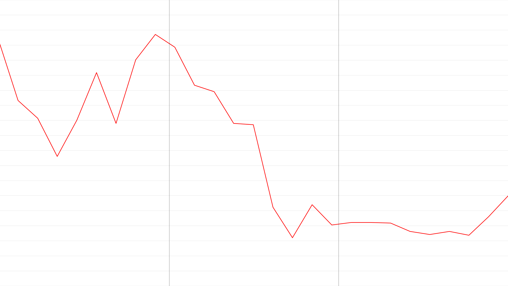

securities
During his time in California, Olmsted invested $2,500 (about $50,000 in 2023) in stocks of California-based companies specializing in infrastructure and extraction. These securities not only enriched Olmsted but also represented the confluence of East Coast capital with Western land and natural resources that would fuel the expansion of U.S. empire internally throughout the second half of the 19th century. By the end of 1865, Olmsted embraced a new role as an informal financial advisor, sharing stock picks with his father and Edwin Godkin, and investigating land-based investments for William Ralston and Morris Ketchum. These are several of the securities Olmsted invested in.
Mariposa Company
1863 1864 1865
Mariposa Company stock plunged from $30/share on December 28, 1864, to $19/share on January 2, 1865.1 ☐
Final project by Maxwell Smith-Holmes for Architecture's Subjects: Labor's Histories [ARC550]
Last updated May 12, 2023
documents

Mariposa Company stock certificate for 1,000 shares.
Victoria Post Ranney, “Introduction,” in The California Frontier, 1863-1865, ed. Victoria Post Ranney, Garard J. Rauluk, and Carolyn F. Hoffman, vol. 5, The Papers of Frederick Law Olmsted (Baltimore: Johns Hopkins University Press, 1990), 27.
Note: the historic stock market data for this chart is from “Old New York Stock Exchange 1815-1920,” The NYSE History Research Project, https://som.yale.edu/centers/international-center-for-finance/data/historical-financial-research-data/new-york-exchange.